JOSSO.orgCommunity Documentation
An identity appliance contains the definitions for the identity architecture. By leveraging the Identity Appliance Modeler, you can define identity appliances for realizing standards-based Internet SSO settings. Additional identity appliance flavors will be supported in future releases.
An identity appliance contains instances of the element types that conform to the identity appliance meta-model. These constructs can be dragged from the palette view and dropped into the identity appliance diagram. The identity services that will be available upon identity appliance deployment will be driven by the definitions that are part of this appliance. For instance, if we've specified a SAML2 Identity Provider (IdP), the endpoints for the chosen SAML profile and bindings will be enabled. Moreover, if this IdP is connected to an LDAP (Lightweight Directory Access Protocol), authentication will be based on user entries within the target directory. Multiple identity appliances can run simultaneously, representing distinctive facets of a large infrastructure, or - within a multi-tenant setting - the Federated Identity services for a specific tenant. Identity Appliances will run isolated from one another, yet be managed centrally through the Atricore Console.
An identity appliance can be created from scratch or scaffolded by building on reference identity appliance templates. Let's explore these options in more detail.
Starting from scratch is usually the best option when your setting is very particular - there is template available that will match your setting. To create a new appliance, press on the "New" button with the "Empty Identity Appliance" item set on the select box on the right. This will open a dialog for specifying information to identify the target identity appliance.
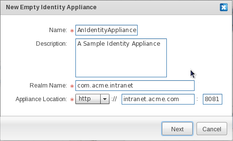
The Name field contains the unique identifier for the identity appliance. Choose an identifier that is within the parameters of the allowed character set, and that is not in use by another identity appliance.
The Description field is an informative field used to describe the function of the identity appliance. Characteristics like the owner's organization name and the type of service that will be implemented through the appliance can be defined here.
The Realm Name provides a unique namespace for the elements contained by the identity appliance. For instance, artifacts produced by an identity appliance transformation process: module identifiers, java classes, etc. will be qualified using the Realm Name. The Realm Name and the Identity Appliance Name are the building blocks of the fully qualified identity appliance name, or FQIAN.
The Appliance Location specifies the host name, and the port where identity endpoints for the identity appliance will be bound. We strongly suggest that you use a fully qualified host name, so that the identity appliance services are decoupled from a specific physical host.
Once the fields are filled in, press the "Accept" button. This will create an empty identity appliance, enabling the identity appliance modeling process.
Scaffolding allows you to automatically generate a full blown Internet SSO setting based on an existing identity appliance template. By building on user-supplied attributes of the expected Internet SSO setting, Atricore Console is able to deliver a working identity appliance. This acts as the "scaffolding" over which the identity architect can layer their own custom identity appliance.
In order to scaffold an identity appliance, select the "Federated SSO Baseline" item and click on the "New" button. This will open a wizard application which will guide you through several steps for gathering the high-level attributes of the Internet SSO setting to be scaffolded.
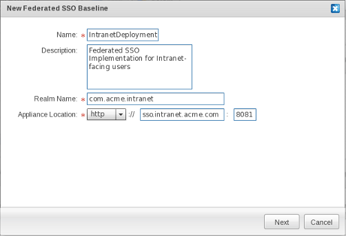
The first step if filling in information to identify the identity appliance.
Field Descriptions
|
Field |
Description |
|
Name |
Unique identifier of the identity appliance. Choose an identifier that is within the parameters of the allowed character set, and that is not in use by another identity appliance. |
|
Description |
Describe the function of the identity appliance. Common descriptors are the owner organization and the type of services that will be implemented through the appliance. |
|
Realm Name |
Unique namespace for the elements contained by the identity appliance. For instance, artifacts produced by the identity appliance transformation process: module identifiers, java classes, etc. will be qualified using the Realm Name. The Realm name and the Identity Appliance Name are the building blocks of the fully qualified identity appliance name (FQIAN). |
|
Appliance Location |
Specifies the host name, and the port where identity endpoints for the identity appliance will be bound. We strongly suggest that you use a fully qualified host name, so that the identity appliance services are decoupled from a specific physical host. |
Once the fields are filled in, press the "Next" button to move on to the second step.
The second step involves setting up the building blocks of the trust system, which is based on Public Key Infrastructure (PKI). The trust system provides for peer authentication, integrity, confidentiality and non-repudiation in a transport-agnostic fashion. The SAML standard - which JOSSO supports - builds on PKI to guarantee these security attributes for SSO message exchanges. The requested information is mainly used for providers to access private and public key pairs.
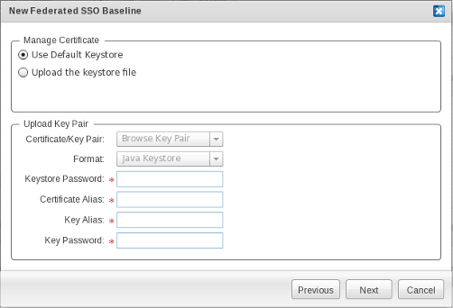
Field Descriptions
|
Field |
Description |
|
Use default keystore |
Use the built-in keystore part of the distribution. Only recommended for sandbox settings, where security is not really an issue. Within a production system, we strongly recommend using a custom keystore. |
|
Upload the keystore file |
Select this option to use a custom keystore. |
|
Certificate/Key Pair |
Allows selection of the desired keystore file from the local file system. |
|
Format |
The Keystore Format for the uploaded keystore file. Choose "Java Keystore" which is currently the only supported keystore format. We expect support for PKCS#12 in future releases. |
|
Keystore Password |
Password that providers use to open the keystore and obtain private and public certificate pairs required for securing SSO exchanges. |
|
Certificate Alias |
Identifier of the keystore entry for the public key. The public key can, for instance, be used to validate the digital signature conveyed in SAML messages, to identify the requestor and the integrity of the messages. |
|
Key Alias |
Name of keystore entry for obtaining the corresponding private key. The private key can, for instance, be used to digitally sign SAML messages. |
|
Key Password |
The password required to obtain the private key. |
Press the "Next" button to continue.
The third step concerns Identity Provider-facing authentication and backing Identity Store preferences.
Within the "Basic Authentication" section, you can specify preferences concerning user authentication. By default, only basic authentication - authentication based on username and password credentials - can be selected. In terms of where user and entitlement information is located, several storage technologies and access protocols can be used.
Within the "Users Repository" section, you'll mainly be specifying the identity source that will be attached to the Identity Provider, and which will be used for obtaining user details and entitlement entries.
Field Descriptions
|
Field |
Description |
|
Obfuscate Password |
This setting determines whether passwords for user accounts will be kept in clear text or not. By default, passwords will be obfuscated using a hashing algorithm (e.g. MD5) in the identity store, so that even if this piece is compromised user passwords will not be disclosed. |
|
User Repository Name |
A unique identifier for the identity source used by the IdP. |
|
User Repository Type |
The type of user repository to be employed. Choosing "Identity Vault" will cause the IdP to use the built-in identity source based on a relational database management system (RDBMS) and schema. The identity vault is the target for provisioning actions performed through the Account and Entitlement Management interface. This is the suggested option if you want JOSSO to use a dedicated identity store, and wish to benefit from GUI-based and integrated account and entitlement management. Choosing "Identity Source" will cause the IdP to use an external identity source. |
|
Identity Source Type |
The type of identity source that will be attached to the IdP. Choosing "Database" as the identity source will cause the IdP to connect to an RDBMS identity source based on a default user schema (TODO: refer to user DDL or ER diagram ? ). Connection properties for the database instance will be requested in the next wizard step. Choosing "LDAP" as the identity source will cause the IdP to connect to a Directory accessible through the LDAP protocol. Connection properties for the LDAP directory will be requested in the next step. Choosing "XML" as the identity source will cause the IdP to build on XML documents to obtain account and entitlement entries. This is recommended only for sandbox settings. Location information for the XML documents holding user credentials will be requested in the next step. |
Press the "Next" button to continue.
If you choose "Database" as your identity source, when you go on to the next step you'll need to enter the connection properties for the database instance used by the IdP to collect user details and entitlement entries.
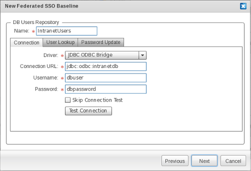
Within the "Connection" screen, connection attributes can be specified.
|
Field |
Description |
|
Driver |
The identity appliance scaffolding wizard provides only one option to connect with a database system: through a JDBC-ODBC driver. This is meant for a Windows-based system - ODBC is a Windows standard- but it can also be used from a Linux host. Upon completion of the wizard, a native JDBC (type 4) driver can be substituted if the RDBMS vendor did not supply an ODBC driver, or if JOSSO is being hosted in a system that is running the Unix operating system (e.g. Linux). |
|
Connection URL |
The connection string employed in order to establish a connection to the target database, in JDBC-ODBC Bridge format. |
|
Username |
The username portion of the credentials set, which will be passed along once a connection to the target database has been established. |
|
Password |
The password portion of the credentials set, which will be passed along once a connection to the target database has been established. |
|
Skip Connection Test |
Check in case the connection against the database will not be verified. |
|
Test Connection |
Click to verify that JOSSO is able to reach the database using the connection attributes you've supplied. This avoids the potential for show stopper issues at the time of execution which could, for instance, break authentication. |
Within the "User Lookup" tab you can supply SQL queries that will be used by an Identity Provider to retrieve user credentials and details, as well as roles. Supplying this information is required, given that JOSSO is schema-agnostic and therefore requires the directives in order to adapt to an arbitrary schema.
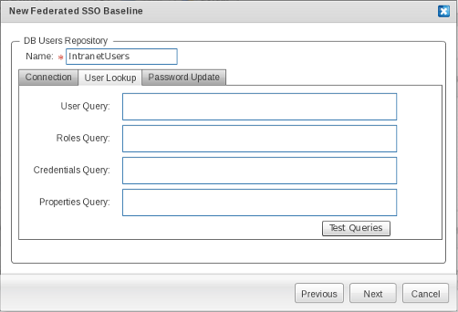
|
Field |
Description |
|
User Query |
SQL query for selecting a record from the table that is responsible for storing users. If using the reference schema, you should employ the following query : TODO: insert query |
|
Roles Query |
SQL query for selecting the role records for a selected user. If you're using the reference schema, you should employ the following query: TODO: insert query |
|
Credentials Query |
SQL query for selecting the credential records for a selected user. If using the reference schema, you should employ the following query : TODO: insert query |
|
Properties Query |
SQL query for selecting custom user attributes that will be conveyed as claims in authentication assertions. If using the reference schema, you should employ the following query : TODO: insert query |
|
Test Queries |
Click to make sure that SQL queries are well-formed and will return the expected information. |
Within the "Password Update" screen you can supply the SQL queries used for self-services such as password change.
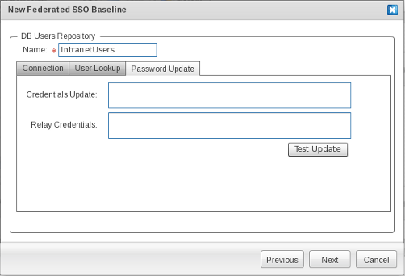
|
Field |
Description |
|
Credentials Update |
SQL update statement for changing user credentials. If using the reference schema, you should employ the following query : TODO: insert query |
|
Relay Credentials |
SQL update statement for updating the credentials backing Remember Me functionality. If using the reference schema, you should employ the following query : TODO: insert query |
|
Test Update |
Click to ensure that update statements are well-formed and can be expected to perform the required changes. |
If you choose an LDAP Identity source, at the next step in the process you will be prompted to enter the connection properties for the LDAP Directory instance that is used by the identity provider to retrieve user details and the corresponding entitlement entries.
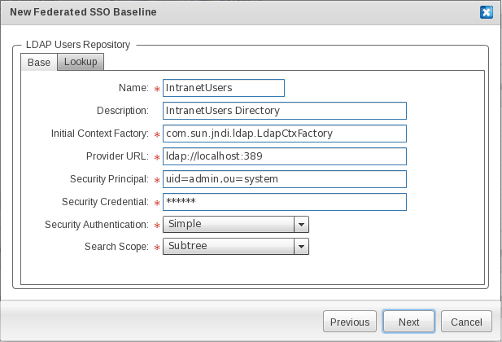
|
Field |
Description |
|
Name |
|
|
Description |
|
|
Initial Context Factory |
The fully qualified class name of the InitialContextFactory implementation. This defaults to the Sun LDAP provider implementation com.sun.jndi.ldap.LdapCtxFactory. |
|
Provider URL |
Enter the LDAP URL for the LDAP Directory Server. This defaults to "ldap://localhost:389", hence expecting a directory server listening on the standard port available in the same server JOSSO (and identity appliances) execute. |
|
Security Principal |
Enter the principal for authenticating the caller to the service. This defaults to "uid=admin,ou=system", the default for OpenLDAP. |
|
Security Credential |
Enter the credential for the security principal that will be passed on to authenticate the caller to the service. The semantics of this field depend on the chosen authentication mechanism, as described below. |
|
Security Authentication |
Determines what authentication mechanism will be used to authenticate the caller to the service. Available options are "None" for anonymous binding, "Simple" for password-based authentication and "Strong" for authentication using X.509 client certificates. |
|
Search Scope |
Enter the search strategy used to query user and role entries in the target LDAP directory. The default is "Subtree". Setting the search scope to "Base" queries within the specified contexts. Setting the search scope to "One" will cause LDAP queries to search only the immediate children of the LDAP object corresponding to the DN for users and roles. Setting it to "Subtree" will query the entire LDAP directory subtree below the search baseDN for users and roles. TODO: children ? |
On the "Lookup" screen you can determine how user and role entries are to be retrieved. This is required in order to access identity data that responds to arbitrary schemas. This avoids forcing migrating user data to a product-specific user schema, allowing you to reuse existing identity silos independently of how user data is structured.
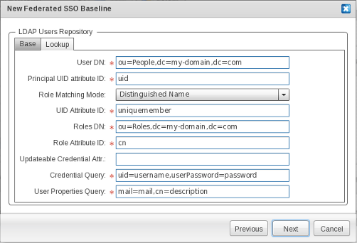
|
Field |
Description |
|
User DN |
Enter the "distinguished name" (DN) that will be used as context for user searches. This defaults to "ou=People, dc=my-domain, dc=com". |
|
Principal UID Attribute ID |
Enter the LDAP attribute name that holds the distinctive identifier of the user. This defaults to "uid". |
|
Role Matching Mode |
Select the mechanism to obtain the roles for a user. Every mode builds on a a specific user attribute to obtain user roles. If you select "distinguished name", roles will be retrieved by using the DN of the user entry as the key. If "user id" is selected, roles will be retrieved using the User ID. If "user principal" is selected TODO: not sure of this option semantics This defaults to "distinguished name". |
|
UID Attribute ID |
Enter the attribute identifier holding the user id. This defaults to "uniquemember". |
|
Role Attribute ID |
Enter the attribute identifier for the role name. This defaults to "cn". |
|
Updateable Credential Attr |
TDB: explain semantics |
|
Credential Query |
Enter the query used to obtain username and password values from the user entry. The left-hand part represents the LDAP attribute name, while the right-hand part identifies the name variable name holding its value. In this case, "username" identifies the placeholder for the username part and "password" identifies the placeholder for the password part. Both need to be defined in order for the identity provider to retrieve the user credentials required for authentication. This defaults to uid=username, userPassword=password |
|
User Properties Query |
Enter the query used to obtain user attributes from the user entry. The left-hand part represents the LDAP attribute name, while the right-hand one identifies the name variable name, holding its value. In this case, the left-hand part contains the LDAP attribute name for the user attribute to be extracted, while the right-hand part holds the property name that will be bound to it. This defaults to mail=mail,cn=description. |
In instances where you choose an XML identity source, you'll need to enter the preferences for retrieving user details and entitlement entries from XML documents when you move on to the next step.
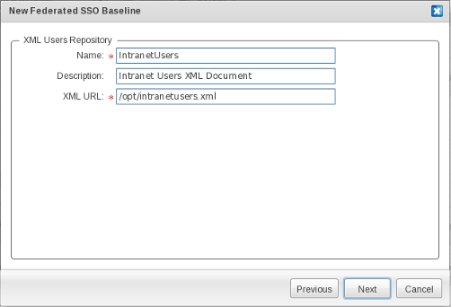
|
Field |
Description |
|
Name |
An identifier of the XML Identity Source. |
|
Description |
A descriptive text for the XML Identity Source. |
|
XML URL |
The absolute location for the XML document containing user and entitlement entries. |
Press "Next" to move on to the next step.
Up to this point we've mainly specified a minimum set of characteristics in order to implement the IdP, which will play the asserting party role. Next, we'll specify the Service Provider (SP), which will rely upon authentication assertions pushed by the IdP.
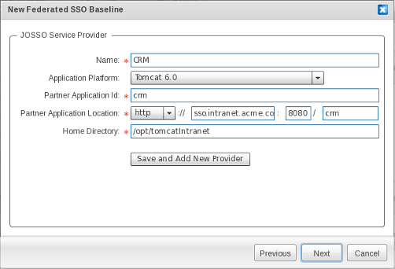
|
Field |
Description |
|
Name |
The unique identifier of the SP. |
|
Application Platform |
Specifies the execution environment hosting the SP. Within this wizard, only a limited set of execution environments, namely JBoss and Tomcat execution environments, are available for usage. Additional execution environments are available in the "Execution Environments" palette drawer. |
|
Partner Application Id |
The "Partner Application Id" field is a unique identifier for the JOSSO partner application that's consuming the services provided by the SP. There is a one-to-one relationship between a partner application and an SP. The SP acts as a delegate of the partner application for negotiating with identity and access management services. |
|
Partner Application Location |
Those of you who are familiar with JOSSO1 might notice that the term "Partner Application", which is employed in this first product generation, has a meaning that corresponds to the term "Service Provider", which is the term used in the SAML standard. JOSSO2 builds on legacy JOSSO1 Agents in order to realize SSO-enabling usage scenarios. JOSSO2 provides a compatibility layer, that complies with both the front and back-channel contracts of the JOSSO1 Gateway, making a JOSSO2 server instance appear as a plain old JOSSO1 Gateway. Given the partner application and SP semantic correspondence, Atricore Console enforces the use of the same identifier. As you type the SP name, the partner application identifier is automatically filled with this. |
|
Home Directory |
Target execution environment installation. This path must be reachable from the JOSSO2 server instance. This execution environment will be available for activation at design-time from the identity appliance model. As of JOSSO 2.0.2 there is no support for activating remote execution environments. |
|
Add New Service Provider |
My clicking on "Add New Service Provider" you can instantiate additional SPs. |
When you click "Next", a screen will appear showing the identity appliance settings submitted through the wizard. Click on the "Confirm" button if they are correct, or return and adjust the settings in previous steps. When you click the "Confirm" button the identity appliance will be created.
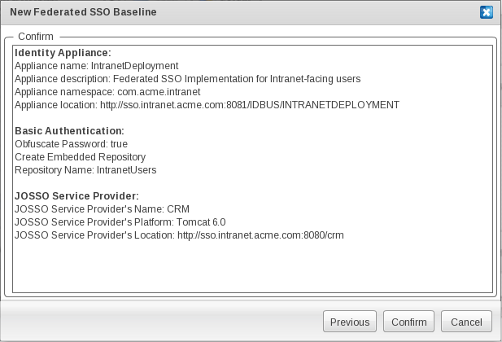